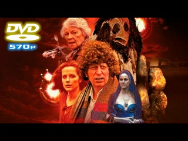
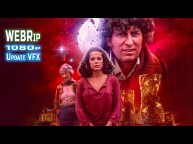
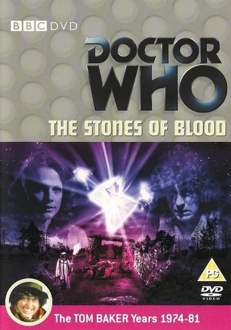
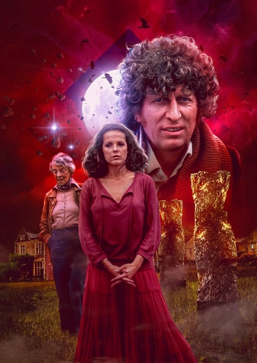
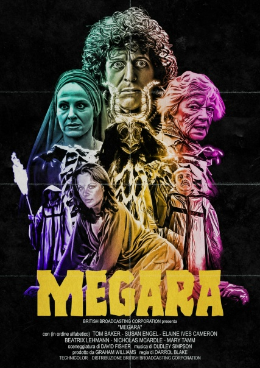
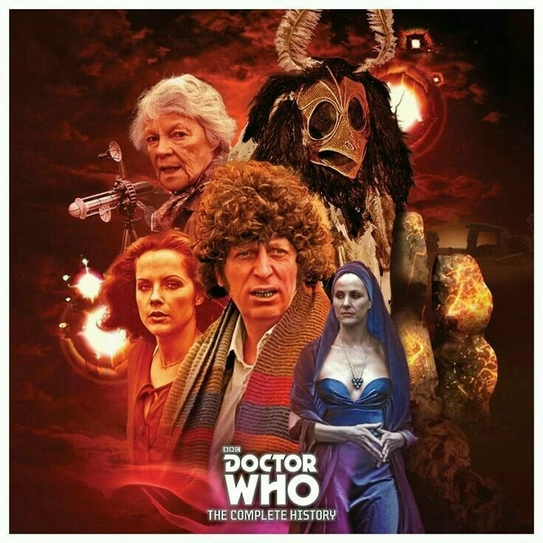

камео
Субтитры: Русские и Английские |  |
|---|---|
с фанатским обновлением визуальных эффектов (cunningmunki) Субтитры: Русские и Английские |  |
The Stones of Blood
Дата выхода: 28 октября - 18 ноября 1978
Формат: 4 эпизода по 25 мин.
| | камео |
Поиск третьего фрагмента Ключа Времени приводит Доктора и Роману в Корнуолл, к древнему каменному кругу Девяти Путников, где последователи таинственного культа совершают ритуалы под предводительством женщины, живущей на Земле уже четыре тысячи лет. Камни оказываются живыми существами, питающимися кровью, а за маской языческой богини скрывается беглая преступница с планеты Диплос. Первая серия сезона, действие которой разворачивается на Земле, и единственная в классическом сериале, снятая женщиной-режиссёром — Пенни Эпплби. Готический хоррор с кельтским колоритом, к финалу уходящий в гиперпространство.
VHS - май 1995 |   DVD+Boxset - 24 сентября 2007 * Версия в нашей группе |
|---|


